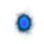

Ера Драконів
Ера Драконів
Одна з найкорисніших подій Орни "Ера драконів" - це подія коли можна купити корисних тваринок та отримати одні з найкращих каменів на вард для обладунків.
Під час цього івенту ви можете придбати тваринок - драконів.
Для того щоб тваринка з’явилась в магазині вам потрібно повністю заповнити кодекс аналогічного боса.
Босів драконів можна зустріти під час полювання в світі, в звичайних підземеллях або в драконячих підземеллях (найшвидший варіант) і в монументах.
Боси будуть доступні по черзі, тільки “закривши” Т5 боса ви зможете побачити Т6 і так далі до Т10. (Якщо під час проходження підземелля ви “закрили” певного дракона, то будьте готові, що далі в цьому ж підземеллі вже може з’явитись наступний по черзі дракон).
Також всі боси дракони мають "золоту ауру" і при їх вбивстві можна отримати богогарт на ваших речах.
Перелік босів
T5 Лотан, Кручений Змій (Lotan, Coiled One)
 T6 Врітра, Непохитна Змія (Vritra the Steadfast)
T6 Врітра, Непохитна Змія (Vritra the Steadfast)
T7 Агатодаймон, Руйнівний Змій (Agathodaemon)
T7 Зальтис, Добрий Змій (Zaltys, Friendly One)
 T8 Іллуянка, Кам'яна Змія (Illuyanka, Made of Stone)
T8 Іллуянка, Кам'яна Змія (Illuyanka, Made of Stone)
T8 Бейтір, Багатоликий Змій (Beithir) (він не має аналогічного пета)
T9 Баше, Ненаситний Змій (Bashe, Hungry One)
 T9 Кукулькан, Пернатий Змій (Quetzalcoatl, Feathered One)
T9 Кукулькан, Пернатий Змій (Quetzalcoatl, Feathered One)
 T10 Змій Горинич, Син гір (Gorynych, Son of Mountains)
T10 Змій Горинич, Син гір (Gorynych, Son of Mountains)
 T10 Імір, Первісний Змієкрил (Ymir Amphiptere)
T10 Імір, Первісний Змієкрил (Ymir Amphiptere)
Деякі корисні речі
 Відлога занепалих небес (Fallen Sky Hood) - T10 шолом +10% дистанцію огляду, ДО не залежить від якості шолома, тому можна лишити і звичайний.
Відлога занепалих небес (Fallen Sky Hood) - T10 шолом +10% дистанцію огляду, ДО не залежить від якості шолома, тому можна лишити і звичайний.
 Шолом занепалих небес (Fallen Sky Helmet) - T10 шолом +10% дистанцію огляду, ДО не залежить від якості шолома, тому можна лишити і звичайний.
Шолом занепалих небес (Fallen Sky Helmet) - T10 шолом +10% дистанцію огляду, ДО не залежить від якості шолома, тому можна лишити і звичайний.
(Первісний) Оберіг Врітри ((Ymir) Vritra Charm) - імунітет до Stun, Paralyze, Petrify, також +8% захист від ДОТів.

 Зброя Випробувань - сокира, посох, лук (Trialing Weapons) - +5% EXP, +10% Gold\Orns (двуручна зброя).
Зброя Випробувань - сокира, посох, лук (Trialing Weapons) - +5% EXP, +10% Gold\Orns (двуручна зброя).
Самоцвіт Творіння (Jewel of Creation) - топове каміння в броню.
Скіли, тваринки та речі які можуть знадобитись
Тваринки :
Повсталий Наггенін(Arisen Naggeneen) - івентовий пет, б’є основними стихіями, накидає
 Отруєння(Poison) та
Отруєння(Poison) та
 Неміч(Blight).
Неміч(Blight).
Горгулья(Gargoyle), Кокатріс(Cockatrice), Великий Кокатріс(Great Cockatrice), Колос(Colossus), Медуза(Medusa) - накладають Окам’яніння(Petrified).
Скіли / Дебафи :
Майже всі скіли певної стихії накладають свої дебафи, тому якщо в вас немає класа (Archdruid), то ви можете використовувати стихійні скіли для накладання дебафів, чи прямі спели дебафи. Також такі скіли дозволять вам заповнити всі резисти\імуни босів.
Вогонь
Горіння(Burning).
Земля
 Гниття(Rot).
Гниття(Rot).
Блискавка
Параліч(Paralyzed).
Лід
Замороження(Frozen).
Світло
 Сліпота(Blind).
Сліпота(Blind).
Пітьма
 Сон(Asleep).
Сон(Asleep).
Дракон
Неміч(Blighted).
Аркана
Горіння(Burning),
Гниття(Rot),
Параліч(Paralyzed),
Замороження(Frozen).
Fire / Earth / Lightning / Ice / Holy / Dark / Dragon фіз або маг вміння - для елементальних статусів заповнення кодексу раджу використовувати самі слабкі версії цих скілів, щоб не вбити боса передчасно.
Великі пустощі міміка(Great Mimic's Mischief) - скіл від класу Archdruid, накладає майже всі ДОТи (Burning, Bleeding, Frozen, Paralyzed, Poisoned, Blight, Blind, Rot, Att ↓, Mag ↓, Def ↓, Res ↓)
 Дротик приглушення(Stun Dart) - Stun.
Дротик приглушення(Stun Dart) - Stun.
 Сонливий дротик(Sleep Dart) - Sleep.
Сонливий дротик(Sleep Dart) - Sleep.
Подих кокатріса(Cockatrice Breath) - Petrified, Poisoned, Blight
Якщо у вас немає класу Archdruid, можна використовувати такі спели :
Лють Аннуна(Annwn Fury) - Burning, Frozen, Paralyzed, Rot.
Міазма(Miasma) - Poison та Blight.
 Поріз(Bleed) - Bleeding.
Поріз(Bleed) - Bleeding.
Підпал(Burn) - Burning.
 Отрута / Отруйний удар(Poison / Poisontrike) - Poisoned.
Отрута / Отруйний удар(Poison / Poisontrike) - Poisoned.
 Димова завіса(Smoke Bomb) - Blind.
Ще варіант, це “зібрати” зброю з дебафами та атрибут драконів.
Камінці в зброю, які накладають дебафи :
Самоцвіт Аркани(Jewel of Arcana) - Burning, Frozen, Paralyzed, Rot
Самоцвіт Води(Jewel of Aqua) - Frozen
Самоцвіт Вогню(Jewel of Fira) - Burning
Самоцвіт Природи(Jewel of Natura) - Rot
Самоцвіт Бурі(Jewel of Storma) - Paralyzed
Команда для бота в діскорді, яка покаже вам вміння які накладають певний дебаф
!causes *назва дебафу*
Більш детальну інформацію по дебафам можете почитати на цій сторінці
Дебафи
Гайд по дебафам та як їм протистояти.
T5 Лотан, Кручений Змій (Lotan, Coiled One)
T6 Врітра, Непохитна Змія (Vritra the Steadfast)
T7 Агатодаймон, Руйнівний Змій (Agathodaemon)
T7 Зальтис, Добрий Змій (Zaltys, Friendly One)

T8 Іллуянка, Кам'яна Змія (Illuyanka, Made of Stone)

T8 Бейтір, Багатоликий Змій (Beithir)

T9 Баше, Ненаситний Змій (Bashe, Hungry One)

T9 Кукулькан, Пернатий Змій (Quetzalcoatl, Feathered One)

T10 Змій Горинич, Син гір (Gorynych, Son of Mountains)

T10 Імір, Первісний Змієкрил (Ymir Amphiptere)